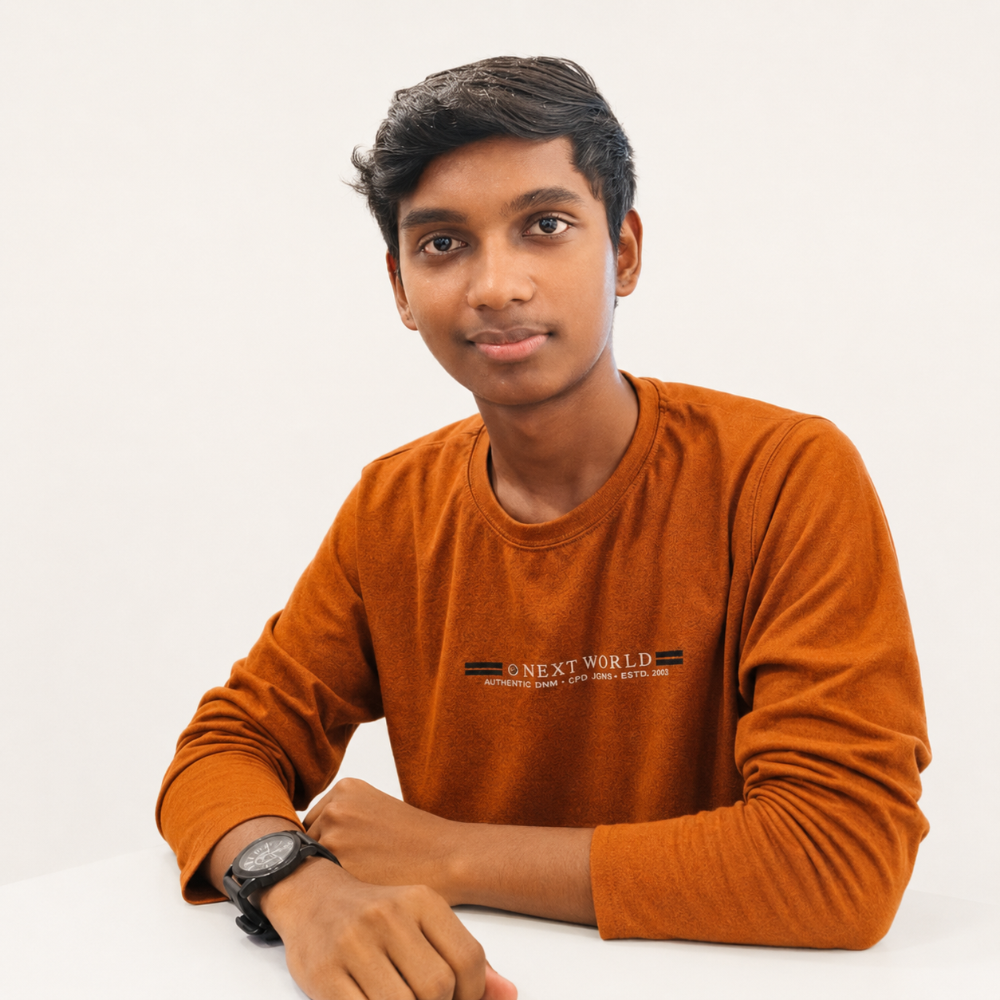

Creative Tech Resume • 2026
Rishivanthan
ECE Student | AI Builder | Video Editor | Content Creator | Freelancer
19-year-old engineering student building AI tools, web apps, automation workflows, local-business products, and sharp tech content for Indian audiences.

Summary
I combine product thinking, AI tooling, frontend execution, and content editing. I can ship MVPs, automate repetitive work, and explain technical ideas clearly.
Selected Projects
Creative Work
Video Editing
Short-form edits, pacing, captions, hooks.
Content Creation
AI, cybersecurity, tech explainers.
AI Builder
Local LLM workflows and AI tools.
Freelance Fit
- Local business websites and landing pages.
- AI workflows for content, research, and operations.
- Video editing, Notion systems, VPS/self-hosted setup.